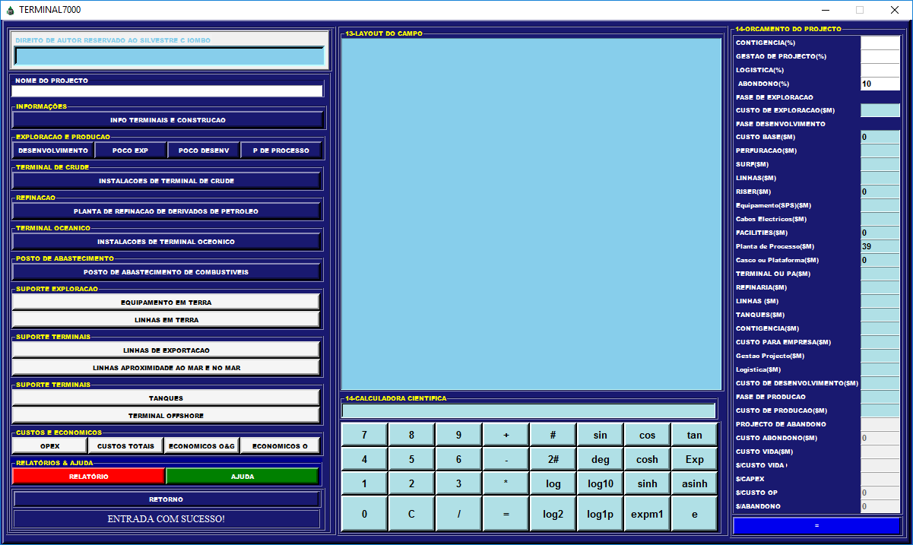

OFC2000
OFC2000 serve para estimação de custos e que têm como funções: emissão de perfis de produção, estimação de número de poços, toneladas de instalações, estimação de custos totais e perfis de custos, para projetos.
GFC2000
As calculadoras digitais começaram a adquirir formato em 2015, quando surge a OFC2000 acabada e pronta ser utilizada

TERMINAL7000
Primeira Calculadora de género feito em Angola para a Projecção de Infraestruturas e Estimação de custos de Terminal Oceânico e de Óleo

CP7000
As calculadoras digitais começaram a adquirir formato em 2015, quando surge a OFC2000 acabada e pronta ser utilizada

Proreserves7000
As calculadoras digitais começaram a adquirir formato em 2015, quando surge a OFC2000 acabada e pronta ser utilizada